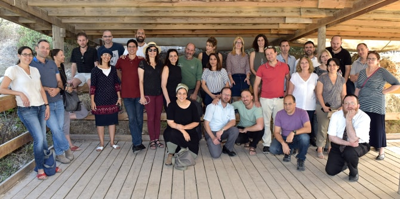

On July 5–6, 2018, a two-day seminar for graduates of Cohorts 23 and 24 of the Mandel School for Educational Leadership, was held as part of Mandel Graduate Unit’s continuation programs. Dedicated to a reexamination of leadership and entrepreneurship, the seminar was comprised of field trips, encounters, and personal and group reflection.
The seminar included exposure to outstanding social, educational, community, and business enterprises; meetings with inspiring entrepreneurs; and encounters with various models of entrepreneurship and leadership, from theory to practice. As a joint activity of two cohorts of graduates, the seminar made it possible to create a broad base of connections and collaborations, peer discussions, increased familiarity among group members, and stronger partnerships with the Mandel Graduate Unit as a professional home that supports action to create change.
The tour began at OrCam Technologies Ltd., an innovative high-tech company producing wearable artificial intelligence devices that help blind and partially sighted people live with a high degree of independence. The graduates heard about the company's groundbreaking developments, which help improve the quality of life of people around the world.

Next, the graduates visited PICO Jerusalem, a project aimed at developing the city as a center of technology. The PICO Space in Jerusalem acts as a community that sees entrepreneurship as a key tool for social development, and hosts meetings of entrepreneurs, social activists, artists, and writers. The graduates met with Eli Wortman, one of the two founders of PICO Jerusalem, and heard about his vision and extensive experience as an entrepreneur, investor, and manager.
The graduates then visited the Shalva National Center, the headquarters of the Israel Association for the Care and Inclusion of Persons with Disabilities. Shalva was founded on the belief that the responsibility to care for children with disabilities should not be solely on their families. The National Center runs a social café that employs people with disabilities. This framework “was established in order to increase awareness of the integration of people with disabilities in society, and is committed to the values of social tolerance and acceptance of the other.”
In the evening, the graduates participated in a workshop on entrepreneurship through the lens of failure and success, in which they were invited to share their experiences. This activity included an opportunity for personal and group reflection.
{kind=link}